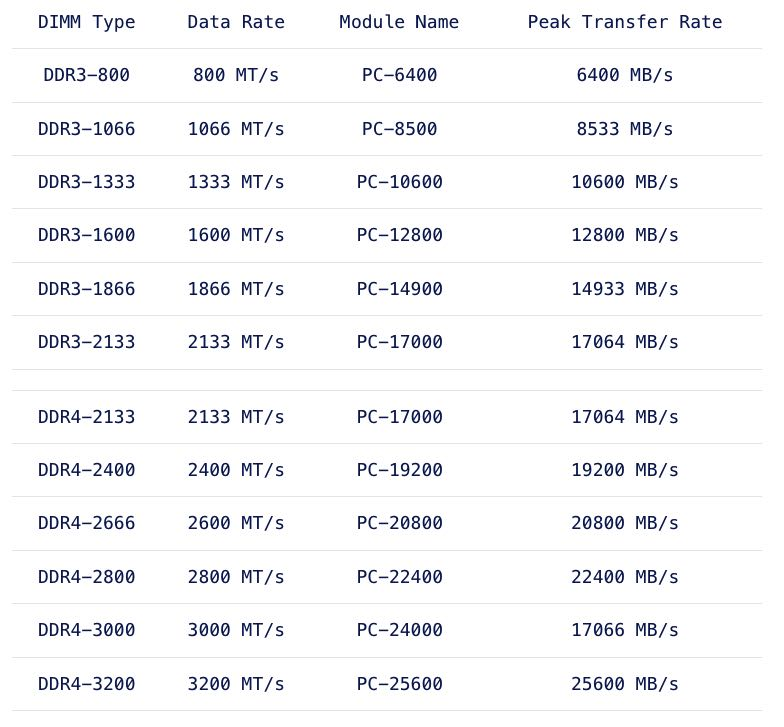
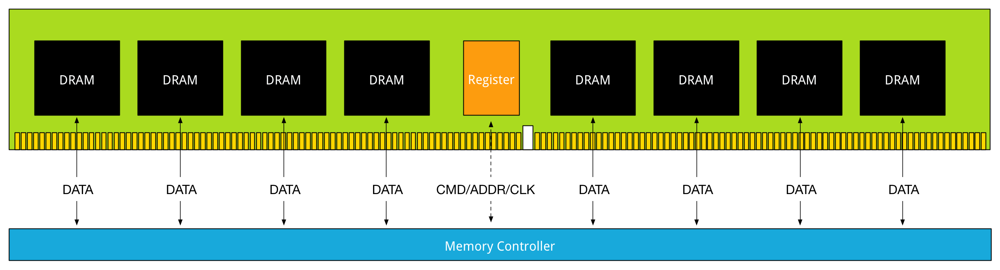

MEMORY DEEP DIVE: DDR4 MEMORY
https://frankdenneman.nl/2015/02/25/memory-deep-dive-ddr4/
下面是DDR4的历史, 2012年发布specs, 2014年首次生产。和DDR3相比，DDR4的频率更高，传输带宽更大，容量更大，电压更低。从这节后面来看，它的unload latency(CAS, 就是在没有压力情况下的延迟更低), 但是实际在load latency(真实情况下的latency)会更低。

Released mid-2014, DDR4 is the latest variant of DDR memory. JEDEC is the semiconductor standardization body and published the DDR4 specs (JESD79-4 (http://www.jedec.org/standards-documents/results/jesd79-4%20ddr4)) in September 2012. The standard describes that the per-pin data rate ranges from 1.6 gigatransfers per second to an initial maximum objective of 3.2 gigatransfers per second. However it states that it’s likely that higher performance speed grades will be added in the future.
Besides the higher data rate transfer speeds, DDR4 offers higher module density. While DDR3 DRAM chip contains 8 internal banks, DDR4 can contain up to 16 internal banks. The DDR4 standard allows up to 128GB per DIMM, allowing extreme high-density memory configurations. Another major improvements is memory power consumption. DDR4 memory operates at a lower voltage than DDR3. DDR4 modules typically require 1.2 volts with a frequency between 2133MHz and 4266MHz. As a comparison; DDR3 operates between 800 and 2400 MHz with a voltage requirement between 1.5 and 1.65V. DDR3 Low voltage can operates at 800 MHz while requiring 1.35V. DDR4 performance better at a lower voltage, low voltage DDR4 is not yet announced but it’s estimated to operate at 1.05 volts.
DDR4提高容量密度的同时，latency其实没有怎么改进：因为更多的晶体管意味着之间通信的距离也更长了。不过这里说的latency没有改进仅仅是对于idle状态的latency, 对于负荷时候的latency因为传输带宽增加了, memory request其实排队的时间也更短，总体的latency其实是可以降低的。
Why does latency lag behind bandwidth? Moore’s law is a big factor. Moore’s law helps bandwidth more than latency as transistors become faster and smaller. This allows the memory vendor to place more transistors on the board. More transistors means more pins, means more bandwidth, but it also means that the communication traverses longer lines. The size of the DRAM chip increases as well, resulting in longer bit and word lines. It basically comes down to distance and as you are all well aware of, distance is a big factor when it comes to latency.
The interesting part is that memory bandwidth is a factor of latency. Latency is a generic term, when reviewing the latency and bandwidth relationship, one has to review unloaded and loaded latencies. Memory latency is measured from the moment the CPU issues a read request to the moment the memory supplies it to the core. This is referred to as load to use.
However the load to use latencies differ when the memory system is idle or when it’s saturated. Unloaded latency is a measurement of an idle system and it represents the lowest latency that the system can achieve. A well-known indicator of memory latency is the CAS timings (Column Address Strobe) and it represents the unloaded latency. Basically it demonstrates the most optimal scenario. CAS timings is a good way to understand the relative latency between two memory DIMMS, however it does not always indicate the real world performance of a system.
Loaded latency is the latency when the memory subsystem is saturated with memory request and that’s where bandwidth has a positive impact on real world latency. Under loaded conditions memory requests spend time in the queue, the more bandwidth speed the memory has, the more quickly the memory controller can process the queued commands. For example, memory running at 1600 MHz has about 20% lower loaded latency than memory running at 1333 MHz.
DDR LRDIMM结构上的改进. 之前提到过UDIMM和RDIMM两种结构，增加了register结构之后容量做到更大; DDR3 LRDIMM在RDIMM基础上对数据也进行了缓冲，但是所有的DRAM chip都使用一个memmory buffer导致，导致通信距离增加. 图中可以看到最长距离达到了70nm.


DDR4 LDRIM上的改进，则是在每个DRAM chip上配备memory buffer, 最长距离缩短一个数量级。